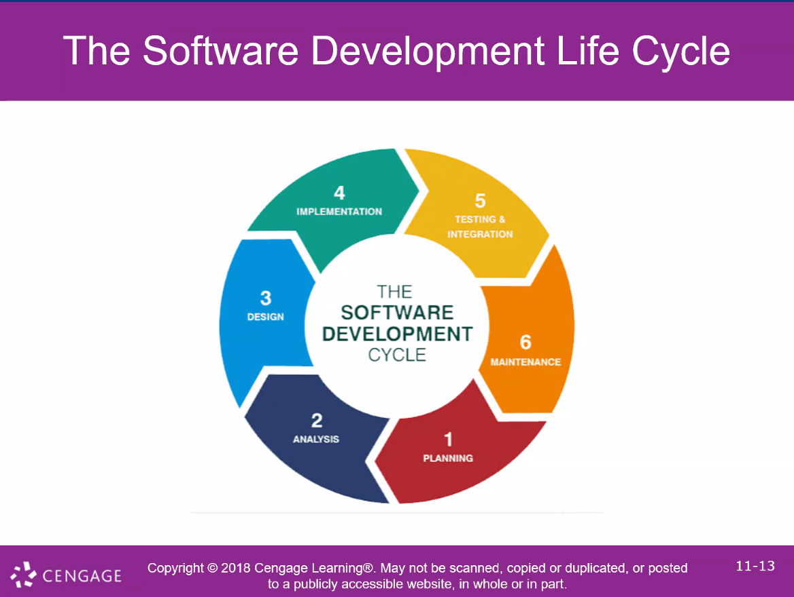

 
GROUP 03: DevOps
Charletta
Joseph Hernandez
Eder Castillo

We are developing a software application that will use the DevOps model to deliver the software application to Prof. McSweeney


Next Week Tuesday 
 Assn 1


Assignment #1 is a collaborative piece of work.
You will be placed in groups of two or threes and each group will be assigned a software development lifecycle to investigate.  
You then do a presentation where you answer four questions and use at least one image.


Questions : 

What is it (your  model)?  DevOps 

How does it work?


In what situation/environment does it work best?

What are the advantages? and

What are the disadvantages?


Software Models - Research Links 

https://www.uptech.team/blog/software-development-methodologies
https://www.intellectsoft.net/blog/top-12-software-development-methodologies-you-should-know/
https://blog.planview.com/top-6-software-development-methodologies/
https://rikkeisoft.com/blog/methodologies-in-software-development/
https://www.velvetech.com/blog/software-development-methodologies/
https://www.tatvasoft.com/blog/top-12-software-development-methodologies-and-its-advantages-disadvantages/